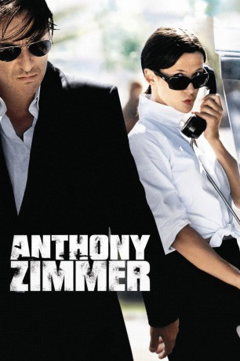

#2287 Anthony Zimmer - Fluchtpunkt Nizza
 
 IMDB-Wertung: 6.5 / 10
IMDB-Wertung: 6.5 / 10  Metascore: 0
Metascore: 0 
Ein Mann und eine Frau treffen sich zufällig im Zug, sie verführt ihn und er verfällt ihr gnadenlos. Was er nicht weiß: Die unbekannte Schöne ist die Geliebte des polizeilich gesuchten Wirtschaftskriminellen Anthony Zimmer, die ihn als Köder in einem verwirrenden Spiel benutzt. Es beginnt eine rasante Verfolgungsjagd durch Nizza, mit falschen Fährten und listigen Lockvögeln. Doch wer ist eigentlich Anthony Zimmer?
Jahr: 2005
Dauer: 89 Minuten
FSK: 12
Land: Frankreich Studio: Galileo Medien AGTonspuren:
Untertitel:
Auflösung: 1080p (1920x824) Größe: 4853 MB
Genre: Thriller, Drama, Krimi, Liebe
Regisseur: Jérôme Salle
Drehbuch: Jérôme Salle
Soundtrack: Frédéric Talgorn
Darsteller:
 Sophie Marceau als Chiara Manzoni
Sophie Marceau als Chiara Manzoni Yvan Attal als François Taillandier
Yvan Attal als François Taillandier Gilles Lellouche als Müller
Gilles Lellouche als Müller Daniel Olbrychski als Nassaiev
Daniel Olbrychski als Nassaiev Samir Guesmi als Driss
Samir Guesmi als Driss- Aurélien Jegou als Jeune Garçon Train Bleu
- Gwenaël Clause als Policier Civil
- Sami Frey als Akerman
- Dimitri Rataud als Perez
- Nicky Marbot als Douanier 1
- Olivier Chenevat als Douanier 2
- Alban Casterman als Jeune Douanier
- Christophe Odent als Président Commission
- Luc Chavy als Membre Commission
- Richard Delestre als Room Manager Carlton
- Yann de Monterno als Serveur Carlton
- Laurent Klug als Homme Discret
- José Fumanal als Réceptionniste Negresco
- Thierry Humbert als Garçon de café Nice
- Marc Diabira als Contrôleur Bus
 Alain Figlarz als Douanier Taxi
Alain Figlarz als Douanier Taxi- Yves Penay als Réceptionniste Hotel
- Olivier Brocheriou als Infirmier Scanner
- Frédéric Vaysse als Contrôleur TGV
- Christophe Mahoudeaux als Stewart TGV
- Arnaud Duléry als Garçon Train Bleu
- Pierre Rousselle als Homme Nassaiev
- Patrick Jacquet als Homme Nassaiev
- Valery Novikau als Homme Nassaiev
- Nicolas Tarev als Homme Nassaiev
Datei: X:\2005(A-F)\Anthony Zimmer - Fluchtpunkt Nizza (2005, FSK12, 1920x824).mkv seit 26.10.2015
Festplatte: HD 2003-2004-2005(A-F)
 Es gibt insgesamt 49 Filme in der Gruppe '2005(A-F)'
Es gibt insgesamt 49 Filme in der Gruppe '2005(A-F)'